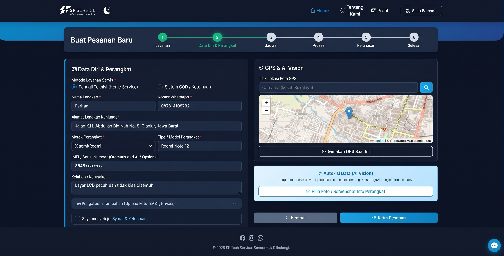
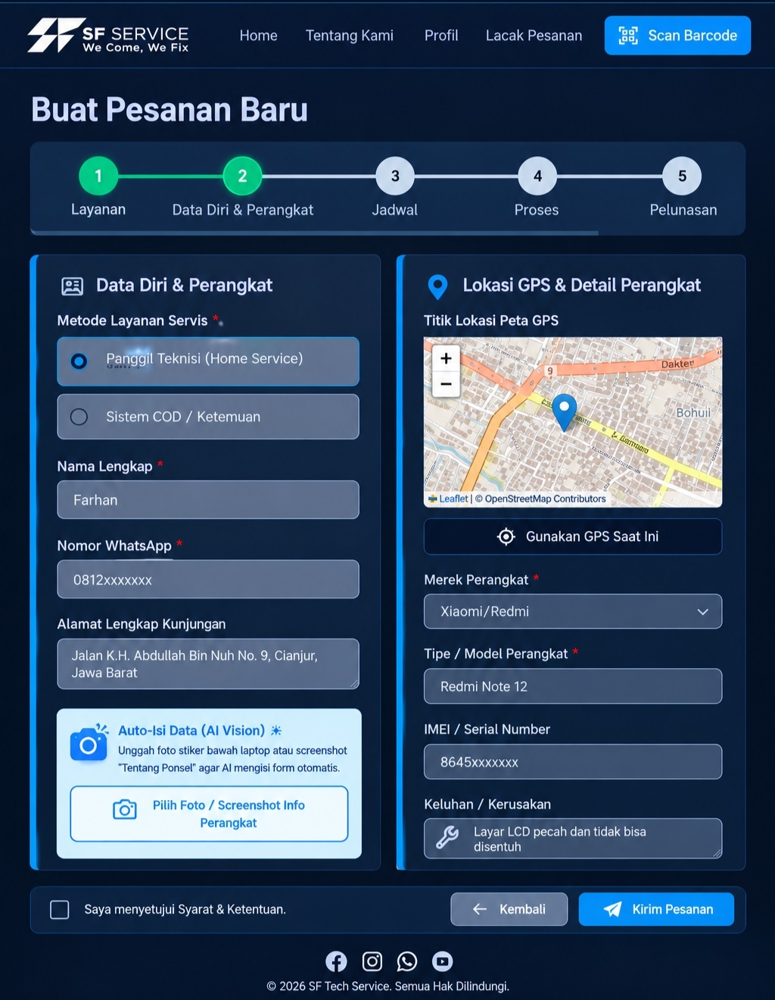

Halo, saya Fachri Rizki Fadillah. Pengembang Web Full-Stack dengan 5+ tahun pengalaman mendalam di bidang logistik, QC, dan infrastruktur IT.


Technical Repair Service Platform
Membangun jembatan komunikasi yang transparan antara pelanggan dan teknisi home-service. Sistem ini mendigitalisasi alur pesanan servis, mempermudah admin dalam manajemen jadwal, dan memberikan rasa aman bagi pelanggan melalui sistem lacak langsung (tracking).
Pelanggan dapat memantau pergerakan lokasi teknisi di atas peta secara akurat dan real-time.
Sistem obrolan instan terintegrasi untuk komunikasi dua arah tanpa perlu aplikasi pihak ketiga.
Dashboard khusus bagi admin untuk memonitor status teknisi, alokasi tugas, dan riwayat perbaikan.
Corporate Fleet & SLA Monitoring System
Mendigitalisasi proses rekapitulasi biaya dan evaluasi rute pengiriman armada secara otomatis. Menggantikan proses input manual yang rawan kesalahan (human error) menjadi sebuah dashboard interaktif yang mampu mengaudit ketepatan waktu pengiriman (SLA) secara real-time berdasarkan data mentah harian.
Sistem secara otomatis menarik data referensi master tarif BBM per kilometer dan mencocokkan kode status SLA pengiriman tanpa perlu input ganda.
Mengkalkulasi total volume muatan, frekuensi perjalanan (trip), dan pengeluaran bahan bakar secara instan berdasarkan wilayah tujuan spesifik.
Menerapkan perhitungan denda dan bonus supir secara otomatis berdasarkan performa ketepatan waktu, serta memproteksi seluruh rentang tabel dari error reference.
Berawal dari pendidikan Teknik Komputer & Jaringan, saya membangun karir dengan menyelami dunia operasional secara langsung. Mengelola manajemen Quality Control hingga sistem logistik 50+ armada truk mengajarkan saya tentang efisiensi proses bisnis dan penyelesaian masalah di lapangan.
Hari ini, saya memadukan wawasan operasional tersebut dengan keahlian pengembangan perangkat lunak (Web Development). Fokus saya adalah merancang sistem back-end yang kokoh dan front-end yang intuitif untuk mengotomatisasi pekerjaan administratif dan operasional yang kompleks.
Merancang aplikasi web Full-Stack modern menggunakan JavaScript, Node.js, Express, MongoDB, MySQL, Socket.io, dan Leaflet.js.
Pengalaman mendalam dengan SAP ERP, TMS (Transportation Management System), Inbound/Outbound Gudang, Quality Control (QC), dan Fleet Routing.
Troubleshooting Hardware & Software (PC/Mobile), manajemen jaringan Mikrotik & Cisco, serta virtualisasi server dengan VMWare/VirtualBox.
Pembuatan desain materi promosi dan dokumentasi visual. Bersertifikasi dan mahir dalam pengoperasian Microsoft Office Suite & Google Workspace untuk keperluan administratif tingkat lanjut.
Bertanggung jawab atas troubleshooting kerusakan hardware/software HP, melakukan Quality Control akhir unit servis, dan manajemen pencatatan stok spare part.
Memproduksi desain materi visual promosi yayasan dan melakukan proses editing untuk dokumentasi kegiatan (foto dan video).
Teknik Komputer & Jaringan (TKJ)
LKP IFAN JAYA
BNSP
PT Dirgantara Indonesia